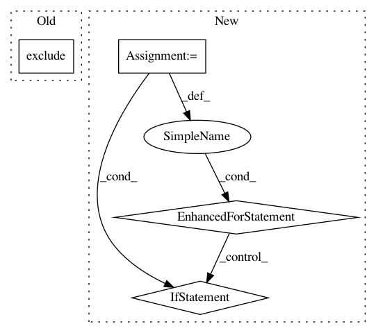

96c5ae2cdd2f6d9c369472b2d1977c02d12c652e,foreman/data_refinery_foreman/foreman/main.py,,retry_lost_processor_jobs,#,210
Before Change
def retry_lost_processor_jobs() -> None:
Retry processor jobs who never even got started for too long.
minimum_creation_time = timezone.now() - MAX_QUEUE_TIME
lost_jobs = ProcessorJob.objects.filter(
success=None,
retried=False,
start_time=None,
end_time=None,
created_at__lt=minimum_creation_time
// TEMPORARY for Jackie"s grant
).exclude(pipeline_applied=ProcessorPipeline.NONE.value)
handle_processor_jobs(lost_jobs)
After Change
nomad_port = get_env_variable("NOMAD_PORT", "4646")
nomad_client = nomad.Nomad(nomad_host, port=int(nomad_port), timeout=5)
lost_jobs = []
for job in potentially_lost_jobs:
try:
job_status = nomad_client.job.get_job(job.nomad_job_id)["Status"]
// If the job is still pending, then it makes sense that it hasn"t started.
if job_status is not "pending":
// However if it"s not pending, then it may have
// started since our original query.
job.refresh_from_db()
if job.start_time is None:
// Nope, this job is lost.
lost_jobs.append(job)
except URLNotFoundNomadException:
lost_jobs.append(job)
handle_processor_jobs(lost_jobs)
def monitor_jobs():
In pattern: SUPERPATTERN
Frequency: 3
Non-data size: 4
Instances
Project Name: AlexsLemonade/refinebio
Commit Name: 96c5ae2cdd2f6d9c369472b2d1977c02d12c652e
Time: 2018-06-14
Author: kurt.wheeler91@gmail.com
File Name: foreman/data_refinery_foreman/foreman/main.py
Class Name:
Method Name: retry_lost_processor_jobs
Project Name: AlexsLemonade/refinebio
Commit Name: 8bc46bda10949ec121c784fa0dd70deea12438f9
Time: 2019-08-22
Author: arielsvn@gmail.com
File Name: foreman/data_refinery_foreman/foreman/management/commands/rerun_salmon_old_samples.py
Class Name:
Method Name: update_salmon_versions
Project Name: MTG/freesound
Commit Name: f96a9c451ebc69e761baa633a33472e974a014d5
Time: 2019-07-24
Author: frederic.font@upf.edu
File Name: accounts/models.py
Class Name: Profile
Method Name: get_enabled_email_types